Vaardigheden
Passive: Opportunist
Sombra ziet tegenstanders met HP onder de 50% door muren als een rode silhouet.
Machine Pistol
Sombra's volautomatische machinepistool werkt goed op korte afstanden.
Hack
Sombra hackt vijanden om tijdelijk hun vaardigheden uit te schakelen of ze hackt Health packs om die onbruikbaar te maken voor haar tegenstanders.
Stealth
Sombra wordt onzichtbaar en haar snelheid wordt verhoogd. Als Sombra schade oploopt tijdens dat ze Stealth gebruikt, wordt haar Stealth uitgeschakeld.
Translocator

De Translocator is een appartaatje die Sombra kan gooien naar een specifieke locatie, waarbij ze vervolgens naar die plek kan teleporteren. Teleporteren kan ook als de Translocator nog in de lucht zit.
Ultimate: EMP

Sombra ontlaad elektromagnetische energie in een brede straal om haar heen, waarbij elke tegenstander die geraakt wordt gehacked wordt en alle barrières en schilden vernietigd worden.